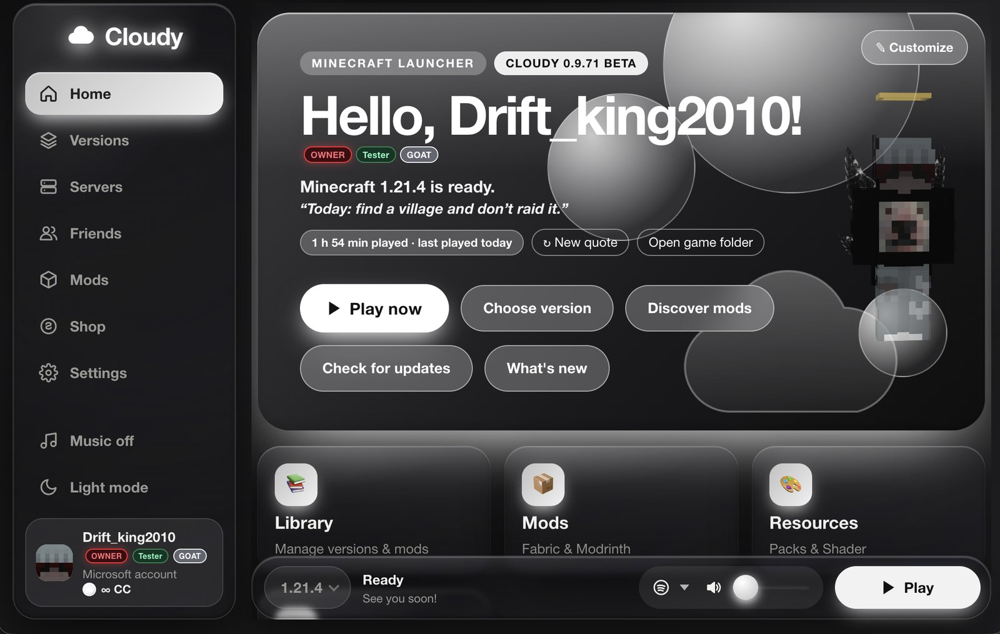

Beta
Cloudy ist der Launcher mit eigenem Client, 3D-Cosmetics, Freunden, Mods und Updates, die einfach passieren.

Funktionen
Von der Installation bis zum Server-Beitritt: Cloudy nimmt dir die Arbeit ab.
Ein ruhiges, gläsernes Interface mit 8 Farbthemen, eigenem Theme, Hintergrund und Tour durch alle Bereiche. Deutsch und Englisch.
Eigene Fabric-Mod für Minecraft 1.21.4 mit Anzeigen für FPS, Ping, Rüstung, Koordinaten und über 19 weiteren Overlays. Standardmäßig aus, du entscheidest.
Performance-Mods wie Sodium und Lithium werden passend installiert und beim Start geprüft. Sicherer Start ohne Mods, falls etwas klemmt.
Modrinth-Suche mit einem Klick, Modpacks als eigene Instanz, Ressourcenpakete und Shader. Java wird automatisch passend geladen.
Umhänge, Flügel, Hüte und mehr. Mit Anprobe am eigenen Skin, Paketen, Coins, Codes und Limited-Drops. Andere Cloudy-Spieler sehen sie im Spiel.
Chat, Gruppen mit Clan-Tag, Sprachanrufe, Server-Codes mit Verbinden-Knopf und „Play“ neben Freunden, die gerade spielen.
Spotify, YouTube, YouTube Music und SoundCloud – samt Lyrics, direkt im Launcher.
Cloudy meldet neue Versionen beim Start, lädt sie mit Fortschritt, installiert und startet neu. Deine Daten bleiben unberührt.
Ein Knopf richtet Streaming ein (Windows und Mac): Minecraft läuft am PC, dein Handy zeigt und steuert es per Moonlight. Dazu die Handy-Fernsteuerung für Mods, Shop und Start.
Installer, portable Version, Apple-Silicon- und Intel-Mac sowie AppImage. Ein iOS-Prototyp ist in Arbeit.
Beta-Programm
Cloudy ist in der Beta. Du testest früh, meldest Fehler und prägst, was als Nächstes kommt.
Updates installiert Cloudy selbst. Neue Versionen findest du außerdem unten, jede zum Herunterladen.
Installation
Wähle unten die Datei für dein System und folge den kurzen Schritten.
Cloudy-Setup.exe doppelklicken und dem Installer folgen. Cloudy startet danach von selbst. Ohne Installation geht auch Cloudy-Portable.exe.
Warnt Windows („Der PC wurde geschützt“), tippe auf Weitere Informationen → Trotzdem ausführen.
Cloudy-arm64.dmg für Apple Silicon (M1 und neuer), Cloudy-x64.dmg für Intel. Öffnen und Cloudy in „Programme“ ziehen.
Beim ersten Start: Rechtsklick auf Cloudy → Öffnen → noch einmal „Öffnen“.
Cloudy-Linux.AppImage laden, Rechtsklick → Eigenschaften → „Ausführbar“ erlauben (oder chmod +x), dann doppelklicken.
Download
Lade die neueste Version oder eine ältere, falls etwas nicht läuft.
Lade Versionen …
Technik